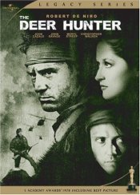

Skip ahead to:
Blobwatch
Russian Ark
Russian Ark (2002)
PG, 96 minutes
Directed by Aleksandr Sokurov
Starring Sergei Dreiden, Mariya Kuznetsova, Leonid Mozgovoy
Now let’s get one thing straight. I’m a sucker for sub-titled flicks. The foreign eye frequently spies things about this life and world that film-makers steeped in the Anglo-Saxon tradition pass over. But this film left me and my couchmate stumped.
Sure, Russian Ark was filmed in one continuous, world-record, take. Sure, it’s something like a lavish dream. But a 96-minute, essentially drama-less tour through a labyrinth of galleries and ballrooms is not my idea of a compelling evening on the cushions.
Nonetheless, Sokurov’s work is, on one level, intriguing. His cameras track an unseen narrator who, with a French diplomat, finds himself in 18th century Russia in the Hermitage, St Petersburg’s renowned art museum. What follows is an other-worldly tour of Russian history and the personalities who have enlivened it. The narrator and his French companion are, of course, very curious about all they see and hear, and proceed to poke about the galleries and ballrooms of this grand edifice soaking up their peculiar circumstance.
Really, one could argue that Russian Ark is little more than a flesh-and-blood Madame Tussaud’s.
Don’t get me wrong, though, it’s not a bad film; it’s just a case of buyer beware. By all means, hire it if you want the museum experience in the comfort of your own home. If you don’t, leave it on the shelf.
The Deer Hunter
The Deer Hunter (1978)
R18, 183 minutes
Directed by Michael Cimino
Starring Robert de Niro, John Savage, Christopher Walken
These days, Vietnam is a tourist hotspot. Forty-odd years ago, it wasn’t. I won’t even bother fossicking about for words to describe what it was. If you want an idea, watch The Deer Hunter.
Having said that, the film is not really about the Vietnam War. It’s too profound to be distracted by elaboration of American foreign policy of the time. The film is simply about ordinary blokes, Russian-American steelworkers, fulfilling their patriotic duty and the awful cost they incur doing so. It is a story told without prejudice or pride.
De Niro, Savage and Walken play Michael, Steven and Nick – three mates who sweat their days away at the local steel mill. After hours, they’re joy-riding about the sleepy streets of their dormitory town in their massive white Cadillac. They dance, they drink, they carouse. And they hunt deer.
Cimino spends good time tracking them as they prepare for and then execute the hunt. And for good reason. The deer hunt is a war. But it’s a war utterly unlike the war they’re about to chopper into. The first war brings them together. The next will wrench them apart and send their souls hurtling, helter-skelter, into mindscapes of unspeakable anguish.
In what seems like a flash, the hunters become the hunted. Left isolated on the battlefield, the three of them wind up in enemy custody. There, their Vietnamese captors force them to play Russian roulette – for kicks. Just as they took aim at their antlered prey back home, they now direct steel barrels towards their own temples.
It is here, in their bamboo prison, that they melt down. And as they personally disintegrate, so too does their previously iron-clad bond of mateship. Though this bond does not melt entirely, it never again resumes the shape it formerly held. The remainder of the film is an intimate survey of the wreckage left by their tour of duty.
The Deer Hunter takes a strong stomach. Nothing about the film is pretty. It is emotionally brutal. Yet none of it seems false or pretentious. It is simply a compelling tale of devastation wrought. Devastation made worse by the victims’ lack of spiritual resources and faith in God.